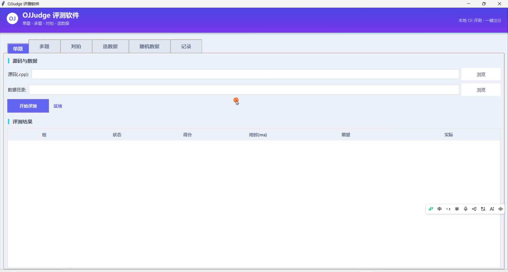
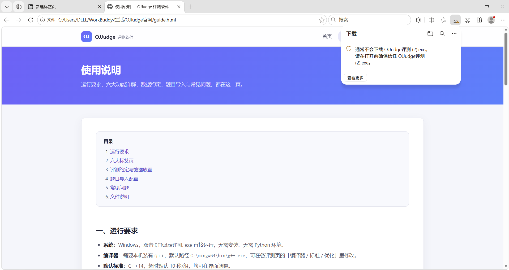
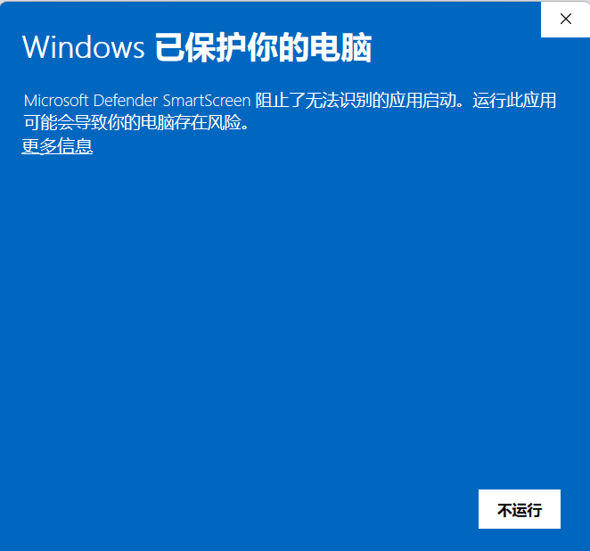
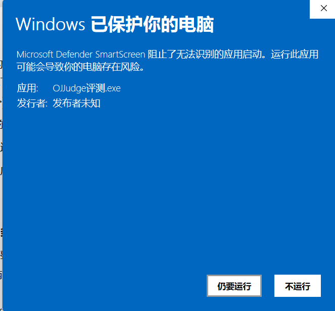

OJJudge 评测软件
一个目录，一键出分
把「编译 → 跑数据 → 比对输出 → 出分」整个流程自动化：单题评测、多题批量、对拍找 bug、随机数据生成，一个 exe 全包。数据不出本机。
界面示意 · 实际运行截图
九大功能，覆盖本地评测全流程
从写完代码到确认正确，中间的所有步骤都在一个窗口里完成。
单题评测
一个源码 + 一个数据目录，一键列出每组 AC / WA / TLE / 无输出、得分、用时、期望与实际输出。
多题评测
一次添加多道题批量跑，结果按题分组汇总；单题出错不中断后续，最后统一出总分。
对拍找 bug
主程序 vs 暴力/标程，随机数据逐轮比对；遇到分歧不中断，跑完全部轮一次性列出所有问题组。
造数据
用自己写的生成器批量产出 .in 与 .out，想控数据内容时用它。
随机数据
不会写生成器？填输入格式、范围、数量即可；附 AC 代码则顺带跑出 .out，留空只出 .in。
评测记录
单题 / 多题 / 对拍 / 造数据每次运行自动保存，软件内可回看历史，内置改动日志。
多编程语言
C++ / Python / Java 一键切换：g++ 编译、解释器直跑、javac + java 编译运行，选「浏览」时按扩展名自动识别。单题、多题、对拍、造数据全流程通用。
网页版也支持多语言
官网「对拍实验室」新增语言按钮：JavaScript 在浏览器内跑，C++ / Python / Java 走服务端真编译器，随机数据生成始终在本地浏览器，与桌面版行为一致。
中文 / English
底栏一键切换界面语言：标签页、按钮、表头、分区标题、状态提示整体切换，切回中文完全还原。
两种写法，都支持
不管你的题解是文件读写还是标准输入输出，直接丢进来就能测。
freopen 文件读写 传统 OJ 写法
程序用 freopen 读写固定文件名，评测时把每组数据复制为 <题名>.in，跑完拿写出的 <题名>.out 与期望比对。
freopen("calendar.in", "r", stdin);
freopen("calendar.out", "w", stdout);
cin / cout 标准输入输出 洛谷 / tarjano 写法
程序从 stdin 读、往 stdout 写。评测时自动把该组 .in 喂给程序，再捕获标准输出与期望比对。
cin >> n; cout << ans << "\n";
两种写法同时存在时，优先采用程序写出的 <题名>.out；数据目录放 *.in 与同名 .out（优先）/ .ans 期望输出。
三步开始评测
下载并运行
下载 OJJudge评测.exe，双击即用，无需安装、无需 Python 环境。
准备数据目录
建一个文件夹，放入 *.in 输入和同名 .out / .ans 期望输出。
开始评测
选源码、选数据目录，点「开始评测」，逐组结果与总分立刻呈现。
软件实机截图
以下截图取自真实运行环境（Windows 11 + Edge），未做任何修饰。




常见问题
结果显示「无输出」怎么办？
<题名>.out（与源码同名）；cin/cout 写法会被自动捕获。两者都没输出时才会判「无输出」。结果显示「CE」？
提示找不到编译器？
C:\mingw64\bin\g++.exe，保存后长期生效。若本机还没有 g++，先下载 MinGW-w64 环境 并解压到 C:\mingw64。评测会弄脏我的数据目录吗？
<题名>.in / <题名>.out）只产生在数据目录内，每次评测结束自动清理，不影响原始数据。macOS / Linux 能用吗？
python3 ojjudge.py，并在界面把编译器路径改成 clang++（macOS）或 g++（Linux）。注意 Python 必须自带 tkinter（python.org 官方版有；报 No module named 'tkinter' 就换官方版，或用 exe）。完整步骤见使用说明 · macOS/Linux 源码版。对拍时三个程序都要用标准输入输出吗？
现在下载，下次写题直接一键出分
三个平台按需选择：Windows 开箱即用，macOS / Linux 用源码版。
Windows 没装 g++？下载 MinGW-w64 环境（解压到 C:\mingw64 即对应默认路径）
macOS 与 Linux 为同一源码包（Python 3 + tkinter，无第三方依赖），配置步骤见使用说明
校验值 · exe 7934ab28…57d（复制）
｜ zip e02cf0db…9bef（复制）